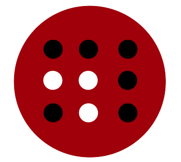

felipefonseca
O site aqui já tem um nome, “Conversa Ubatuba”. Mas ainda nos falta a identidade visual: logo, fonte, cores. Alguém tem sugestões?

O site aqui já tem um nome, “Conversa Ubatuba”. Mas ainda nos falta a identidade visual: logo, fonte, cores. Alguém tem sugestões?

Formas y números: círculos, números cuadrados naturales y fractales de expansión infinita.
El círculo representa a un grupo que pertenecen a un determinado ambiente. A su vez su circunferencia denota un límite un cerco. Cómo vamos expandirlo?
9 círculos internos y un gran círculo que los contiene.
3 al cuadrado es 9. Con una alta capacidad comunicativa, el número tres se configura como el símbolo de la expresión artística y la interacción humana, así como del espíritu optimista, feliz y que disfruta de la vida. Distintas culturas han venerado a este pequeño y, a la vez, gran número.
El número 9 es el número de la persistencia, generosidad y capacidad de empuje.
El círculo mayor es una representación fractal por su definición de infinitud nos permite expandir el límite de la circunferencia planteada. Su ancho y alto de 8 cm.
El 3 es compatible con el 8: alianzas para hacer triunfar intereses y proyectos.
Los número naturales y cuadrados transmiten realidad y conciencia seguridad, y la relación fractal expansión infinita visión, futuro indeterminado y garantido.
Colores: Los colores los tomé del pájaro Tie-Sangue (negro blanco y rojo) (cuál es el pájaro de Ubatuba???). Me gustaría elegir un pájaro y sus colores, porque el pájaro tiene capacidad de conectar con tierra, aire y agua.
Esta es mi primer idea!! Por favor comentar asi puedo perfeccionarla!
Valeu, Nico. Acho o conceito interessante, mas as cores estão escuras. Aqui temos o Tiê sim, e também as Saíras, os Tangarás, e outros.
La forma te gusta? y es solo color? ahi actualice con otros colores…

Olá amigxs, eu gostaria de indicar este tópico para alguns designers gráficos colaborarem na identidade visual do Conversa Ubatuba… ainda está em aberto o projeto de design de um logo para a rede? abçs
Fique à vontade @Kei. O @nicocarosio começou a esboçar alguma coisa aqui, mas acho que ainda não chegamos lá…
Oi pessoal, boa tarde.
Meu nome é Marcelo, sou designer gráfico há quase 20 anos. Cheguei em Ubatuba no começo deste ano e gostaria de contribuir com algumas ideias para o logo do Conversa… Aqui vão duas propostas, nas duas usei como símbolo, o “balãozinho” de fala usada nos quadrinhos, na primeira trabalhei um visual mais tecnológico formando a letra U e na segunda, uma versão mais descontraída, brincando com outro símbolo bastante conhecido aqui da cidade, a prancha! O que vocês acham? Aceitos sugestões também. Abraços a todxs!
Bom dia, @marcelogava. Gostei do caminho das pranchas-balões, acho que dá pra seguir por aí. Me dá a impressão que precisa um pequeno ajuste de perspectiva na quilha, e não tenho certeza se a tipografia me agrada (ou se é o fato das palavras estarem sangrando…)
Legal que você gostou Felipe, na verdade a minha intenção foi deixar um desenho bem plano mesmo pra não ficar uma ilustra de uma prancha, mas vou testar alguns ajustes, inclusive de tipografia e publico por aqui! Abçs
Oi pessoal, segue um novo estudo com as considerações do Felipe. Vejam o que acham. Desculpe pela demora, aproveitei o feriadão e encaixei no meio dos jobs. Abçs!
Gostei bastante, @marcelogava! Por mim já podemos adotar o verde, mas vamos dar uns dias para ver se alguém mais opina…
Legal, quanto as cores, podemos mudar ocasionalmente também. Tem como fazer alguma configuração de layout nesta plataforma?
O esquema de cores é relativamente fácil de mudar.

Verde também!! muito bom!
@marcelogava podes mandar uma versão vetorial do verde? Já quero começar a aplicar aqui e adaptar o esquema de cores…
identidade começando a ser aplicada, valeu @marcelogava. que achou dela ali em cima?
Gostei! mas uma dúvida, dá pra crescer na horizontal? posso testar uma nova versão, o “conversa” ficou muito pequeno…
acho que esse é o tamanho padrão da logo nesse tema de interface. se conseguir aumentar a visibilidade, melhor…
Obrigado pela nova versão da logo, @marcelogava
{kind=link}
{kind=link}
{kind=link}
{kind=link}